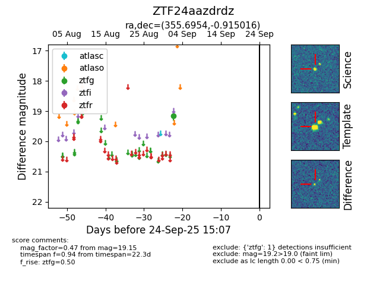

FINK: ZTF24aazdrdz
Lasair: ZTF24aazdrdz
ALeRCE: ZTF24aazdrdz
ZTF24aazdrdz (ztf,fink)
equatorial (ra, dec) = (355.6954,-0.91502)
galactic (l, b) = (87.9321,-59.03976)

last ztfg=19.15
1 ztfg detections